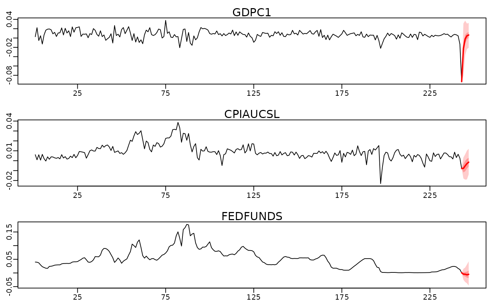

Simulates from (out-of-sample) predictive density for Bayesian VARs estimated
via bvar() and computes log predictive likelhoods if ex-post
observed data is supplied.
Usage
# S3 method for class 'bayesianVARs_bvar'
predict(
object,
ahead = 1L,
each = 1L,
stable = TRUE,
simulate_predictive = TRUE,
LPL = FALSE,
Y_obs = NA,
LPL_VoI = NA,
...
)Arguments
- object
A
bayesianVARs_bvarobject, obtained frombvar().- ahead
Integer vector (or coercible to such), indicating the number of steps ahead at which to predict.
- each
Single integer (or coercible to such) indicating how often should be drawn from the posterior predictive distribution for each draw that has been stored during MCMC sampling.
- stable
logical indicating whether to consider only those draws from the posterior that fulfill the 'stable' criterion. Default is
TRUE.- simulate_predictive
logical, indicating whether the posterior predictive distribution should be simulated.
- LPL
logical indicating whether
ahead-step-ahead log predictive likelihoods should be computed. IfLPL=TRUE,Y_obshas to be specified.- Y_obs
Data matrix of observed values for computation of log predictive likelihood. Each of
ncol(object$Yraw)columns is assumed to contain a single time-series of lengthlength(ahead).- LPL_VoI
either integer vector or character vector of column-names indicating for which subgroup of time-series in
object$Yrawa joint log predictive likelihood shall be computed.- ...
Currently ignored!
Value
Object of class bayesianVARs_predict, a list that may contain the
following elements:
predictionsarray of dimensionsc(length(ahead), ncol(object$Yraw), each * dim(object$PHI)[3])containing the simulations from the predictive density (ifsimulate_predictive=TRUE).LPLvector of lengthlength(ahead)containing the log-predictive-likelihoods (taking into account the joint distribution of all variables) (ifLPL=TRUE).LPL_univariatematrix of dimensionc(length(ahead), ncol(object$Yraw)containing the marginalized univariate log-predictive-likelihoods of each series (ifLPL=TRUE).LPL_VoIvector of lengthlength(ahead)containing the log-predictive-likelihoods for a subset of variables (ifLPL=TRUEandLPL_VoI != NA).Yrawmatrix containing the data used for the estimation of the VAR.LPL_drawsmatrix containing the simulations of the log-predictive-likelihood (ifLPL=TRUE).PL_univariate_drawsarray containing the simulations of the univariate predictive-likelihoods (ifLPL=TRUE).LPL_sub_drawsmatrix containing the simulations of the log-predictive-likelihood for a subset of variables (ifLPL=TRUEandLPL_VoI != NA).
Examples
# Access a subset of the usmacro_growth dataset
data <- usmacro_growth[,c("GDPC1", "CPIAUCSL", "FEDFUNDS")]
# Split data in train and test
train <- data[1:(nrow(data)-4),]
test <- data[-c(1:(nrow(data)-4)),]
# Estimate model using train data only
mod <- bvar(train, quiet = TRUE)
# Simulate from 1-step to 4-steps ahead posterior predictive and compute
# log-predictive-likelihoods
predictions <- predict(mod, ahead = 1:4, LPL = TRUE, Y_obs = test)
#> 'stable=TRUE': Calling 'stable_bvar()' to discard those posterior
#> draws, that do not fulfill the stable criterion.
#>
#> 617 stable posterior draws remaining for prediction!
# Summary
summary(predictions)
#>
#> LPL:
#> t+1 t+2 t+3 t+4
#> 5.114 9.665 9.092 6.526
#>
#> Marginal univariate LPLs:
#> GDPC1 CPIAUCSL FEDFUNDS
#> t+1 -0.8729 0.4109 3.541
#> t+2 2.8555 2.6739 3.391
#> t+3 2.8363 2.4370 3.349
#> t+4 2.8931 0.2959 3.326
#>
#> Prediction quantiles:
#> , , GDPC1
#>
#> t+1 t+2 t+3 t+4
#> 5% -0.07875 -0.0329135 -0.021393 -0.011870
#> 50% -0.01851 0.0009099 0.005688 0.006618
#> 95% 0.03798 0.0429166 0.034118 0.024602
#>
#> , , CPIAUCSL
#>
#> t+1 t+2 t+3 t+4
#> 5% -0.018515 -0.017824 -0.015592 -0.0140807
#> 50% -0.007656 -0.005287 -0.002413 -0.0005886
#> 95% 0.002679 0.006747 0.009743 0.0106464
#>
#> , , FEDFUNDS
#>
#> t+1 t+2 t+3 t+4
#> 5% -0.016214 -0.022544 -0.026463 -0.030055
#> 50% -0.004527 -0.005249 -0.006258 -0.006404
#> 95% 0.005912 0.011279 0.016238 0.018100
#>
# Visualize via fan-charts
plot(predictions)

# \donttest{
# In order to evaluate the joint predictive density of a subset of the
# variables (variables of interest), consider specifying 'LPL_VoI':
predictions <- predict(mod, ahead = 1:4, LPL = TRUE, Y_obs = test, LPL_VoI = c("GDPC1","FEDFUNDS"))
#> 'stable=TRUE': Calling 'stable_bvar()' to discard those posterior
#> draws, that do not fulfill the stable criterion.
#>
#> 617 stable posterior draws remaining for prediction!
predictions$LPL_VoI
#> t+1 t+2 t+3 t+4
#> 2.542386 6.712653 6.548112 6.391536
# }